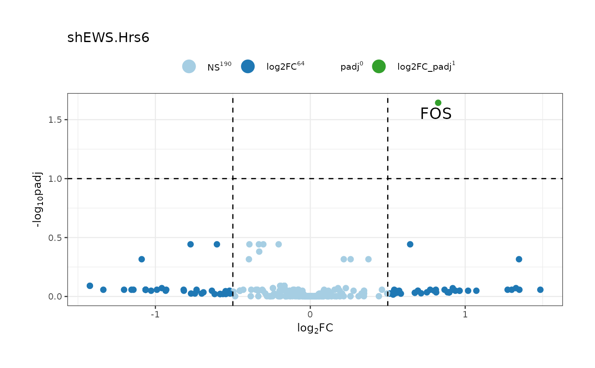
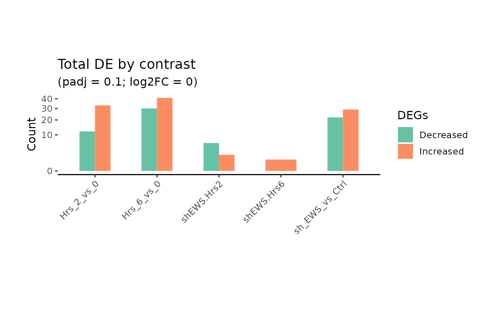
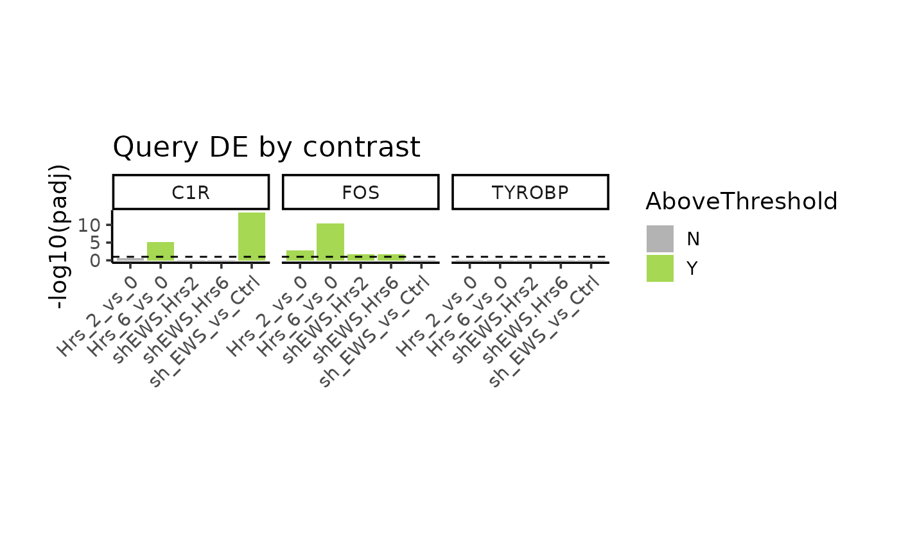
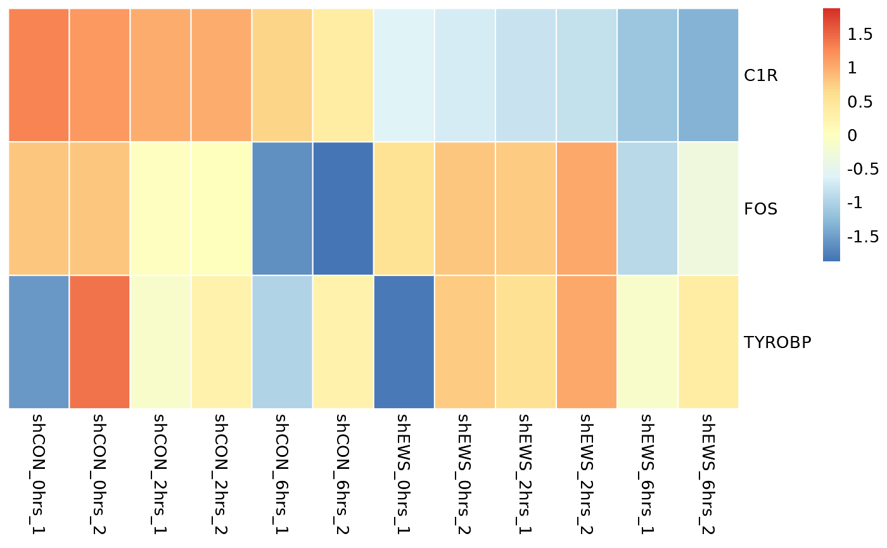

hotList_mapper.Rdfilters Mapper across all columns with hotList
returns mapped Features for any hotList
hotList_mapper(Hotgenes = NULL, hotList = NULL)
hotList_Feature(Hotgenes = NULL, hotList = NULL)Hotgenes object.
vector of Features to select. This will overide all cut offs.
# load package
library(Hotgenes)
fit_Hotgenes_dir <- system.file("extdata",
paste0("fit_Hotgenes", ".RDS"),
package = "Hotgenes",
mustWork = TRUE
)
# from limma
fit_Hotgenes <- readRDS(fit_Hotgenes_dir) %>%
update_object()
enlist_ <-c("ENSG00000170345",
"ENSG00000159403",
'FOS',
"ENSG00000011600")
hotList_mapper(fit_Hotgenes,
hotList = NULL)
#> # A tibble: 336 × 2
#> Feature ensembl_id
#> <chr> <chr>
#> 1 AGER ENSG00000204305
#> 2 AGER ENSG00000230514
#> 3 AGER ENSG00000229058
#> 4 AGER ENSG00000231268
#> 5 AGER ENSG00000237405
#> 6 AGER ENSG00000234729
#> 7 AGER ENSG00000206320
#> 8 ALOX12 ENSG00000108839
#> 9 ALOX15 ENSG00000161905
#> 10 ALOX5 ENSG00000012779
#> # ℹ 326 more rows
mapped_f<-hotList_Feature(fit_Hotgenes,
hotList = enlist_)
mapped_f
#> [1] "C1R" "FOS" "TYROBP"
# with utilities
DE(fit_Hotgenes, hotList = mapped_f)
#> $Hrs_2_vs_0
#> # A tibble: 4 × 12
#> Feature contrast_dir baseMean log2FoldChange FC stat pvalue padj
#> <chr> <chr> <dbl> <dbl> <dbl> <dbl> <dbl> <dbl>
#> 1 FOS Hrs_2_vs_0_down 8.98 -0.510 0.702 -4.39 0.000134 0.00142
#> 2 C1R Hrs_2_vs_0_down 13.5 -0.0991 0.934 -2.01 0.0539 0.239
#> 3 C1R Hrs_2_vs_0_down 13.5 -0.0991 0.934 -2.01 0.0539 0.239
#> 4 TYROBP Hrs_2_vs_0_up 3.82 0.0110 1.01 0.0191 0.985 0.985
#> # ℹ 4 more variables: t <dbl>, B <dbl>, ensembl_id <chr>, significant <chr>
#>
#> $Hrs_6_vs_0
#> # A tibble: 4 × 12
#> Feature contrast_dir baseMean log2FoldChange FC stat pvalue padj
#> <chr> <chr> <dbl> <dbl> <dbl> <dbl> <dbl> <dbl>
#> 1 FOS Hrs_6_vs_0_do… 8.98 -1.64 0.320 -11.6 1.70e-12 3.61e-11
#> 2 C1R Hrs_6_vs_0_do… 13.5 -0.309 0.807 -6.21 8.26e- 7 7.26e- 6
#> 3 C1R Hrs_6_vs_0_do… 13.5 -0.309 0.807 -6.21 8.26e- 7 7.26e- 6
#> 4 TYROBP Hrs_6_vs_0_do… 3.82 -0.237 0.849 -0.402 6.91e- 1 8.63e- 1
#> # ℹ 4 more variables: t <dbl>, B <dbl>, ensembl_id <chr>, significant <chr>
#>
#> $sh_EWS_vs_Ctrl
#> # A tibble: 4 × 12
#> Feature contrast_dir baseMean log2FoldChange FC stat pvalue padj
#> <chr> <chr> <dbl> <dbl> <dbl> <dbl> <dbl> <dbl>
#> 1 C1R sh_EWS_vs_Ctr… 13.5 -0.856 0.553 -16.7 1.33e-16 3.39e-14
#> 2 C1R sh_EWS_vs_Ctr… 13.5 -0.856 0.553 -16.7 1.33e-16 3.39e-14
#> 3 FOS sh_EWS_vs_Ctr… 8.98 -0.0790 0.947 -0.742 4.64e- 1 6.73e- 1
#> 4 TYROBP sh_EWS_vs_Ctr… 3.82 -0.306 0.809 -0.521 6.06e- 1 7.43e- 1
#> # ℹ 4 more variables: t <dbl>, B <dbl>, ensembl_id <chr>, significant <chr>
#>
#> $shEWS.Hrs2
#> # A tibble: 4 × 12
#> Feature contrast_dir baseMean log2FoldChange FC stat pvalue padj t
#> <chr> <chr> <dbl> <dbl> <dbl> <dbl> <dbl> <dbl> <dbl>
#> 1 FOS shEWS.Hrs2_up 8.98 0.645 1.56 4.14 2.67e-4 0.0233 4.14
#> 2 TYROBP shEWS.Hrs2_up 3.82 0.682 1.60 0.858 3.98e-1 0.931 0.858
#> 3 C1R shEWS.Hrs2_up 13.5 0.0215 1.02 0.296 7.70e-1 0.946 0.296
#> 4 C1R shEWS.Hrs2_up 13.5 0.0215 1.02 0.296 7.70e-1 0.946 0.296
#> # ℹ 3 more variables: B <dbl>, ensembl_id <chr>, significant <chr>
#>
#> $shEWS.Hrs6
#> # A tibble: 4 × 12
#> Feature contrast_dir baseMean log2FoldChange FC stat pvalue padj t
#> <chr> <chr> <dbl> <dbl> <dbl> <dbl> <dbl> <dbl> <dbl>
#> 1 FOS shEWS.Hrs6_up 8.98 0.826 1.77 4.53 8.92e-5 0.0227 4.53
#> 2 TYROBP shEWS.Hrs6_up 3.82 0.585 1.50 0.724 4.75e-1 0.946 0.724
#> 3 C1R shEWS.Hrs6_up 13.5 0.0392 1.03 0.539 5.94e-1 0.995 0.539
#> 4 C1R shEWS.Hrs6_up 13.5 0.0392 1.03 0.539 5.94e-1 0.995 0.539
#> # ℹ 3 more variables: B <dbl>, ensembl_id <chr>, significant <chr>
#>
fit_Hotgenes %>%
VPlot(
contrasts = "shEWS.Hrs6",
.log2FoldChange = 0.5,
hotList = mapped_f,
Hide_labels = FALSE,
point_label_size = 5,
base_size = 10,
padj_cut = 0.1
)

fit_Hotgenes %>%
DEPlot()

fit_Hotgenes %>%
DEPlot(
hotList = mapped_f)

fit_Hotgenes %>%
DEphe(
hotList = mapped_f)
